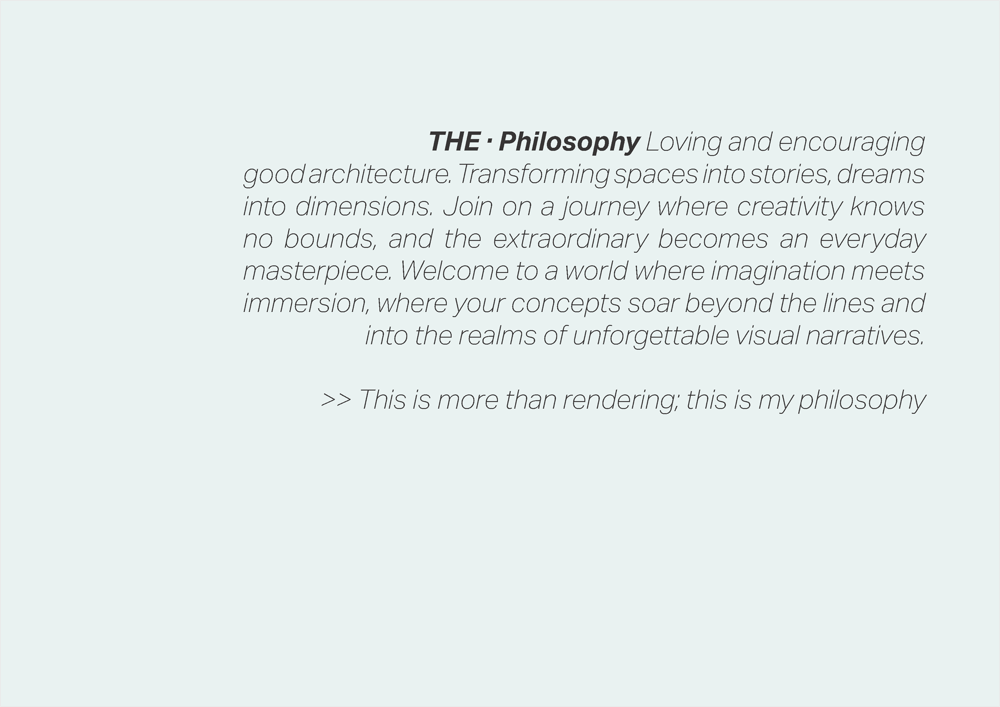
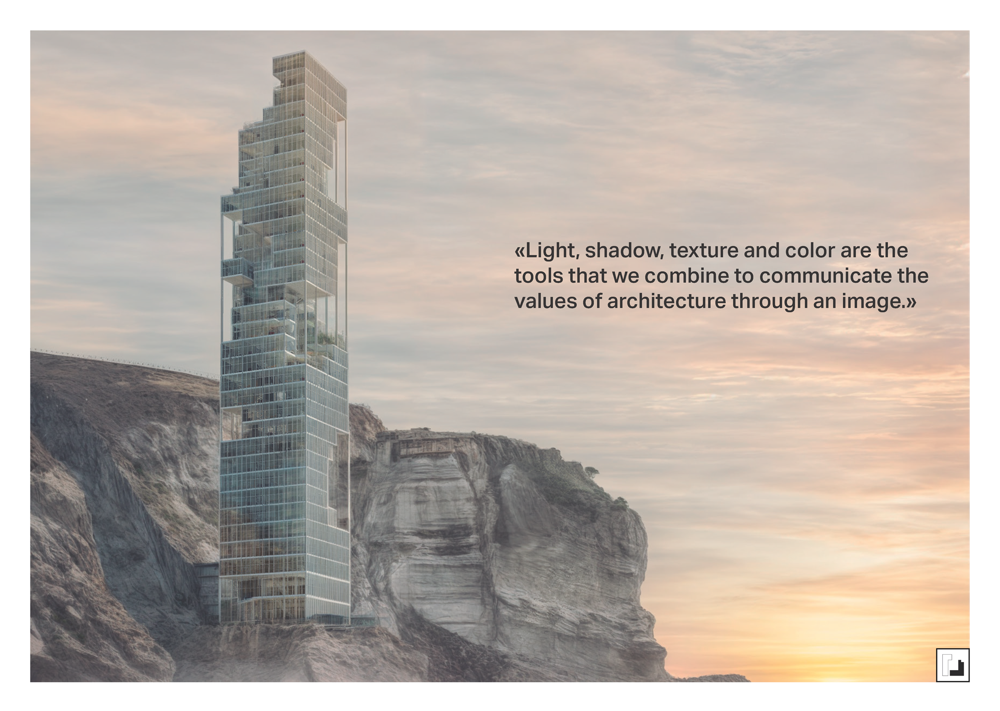
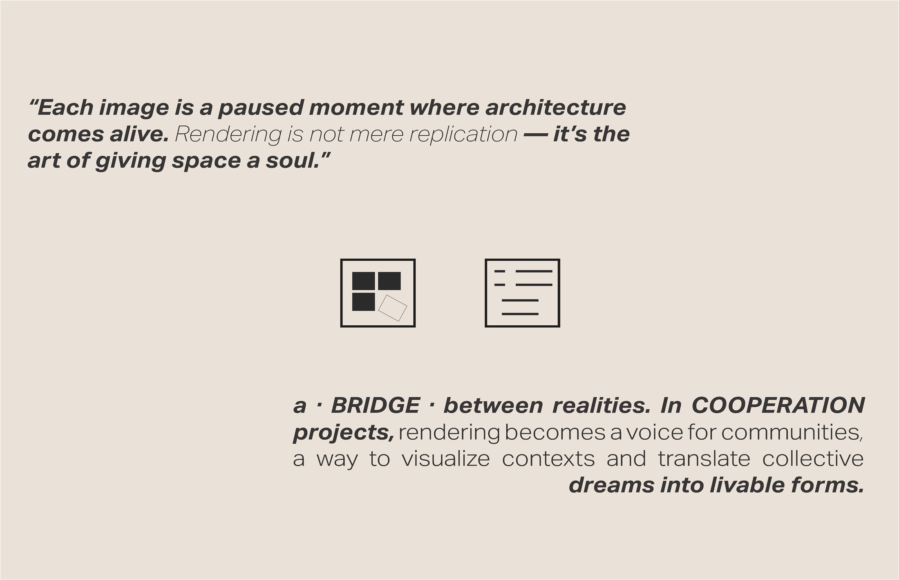
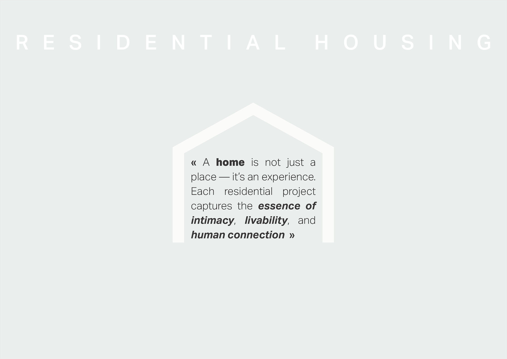

Arquitectura Bioclimática & Obra Social Bioclimatic Architecture & Social Work
Diseño pasivo de bajo impacto ambiental y alta inercia térmica. Especializado en concursos internacionales y proyectos de cooperación comunitaria. Utilización de materiales locales (tierra, bambú, madera) combinados con uniones tradicionales y simulaciones termodinámicas avanzadas para eliminar el acondicionamiento artificial. Low-impact passive design and high thermal inertia. Specializing in international competitions and community cooperation projects. Using local materials (earth, bamboo, timber) combined with traditional joinery and advanced thermodynamic simulations to eliminate artificial climate systems.


Refugios Bioclimáticos OrkideOrkide Bioclimatic Shelters
Refugios temporales para la auto-gestión de refugiados; la sección imita las tradicionales 'casas colmena' y extrae el aire caliente por un óculo superior de forma pasiva.Temporary shelters for refugee self-management; the section mimics the traditional 'beehive houses' and passively extracts hot air through an upper oculus.
Faro de CooperaciónCooperation Lighthouse
Hito de bambú y laterita estabilizada que recoge agua de lluvia; los muros inclinados generan cámaras de aire para potenciar la ventilación natural.A bamboo and stabilized-laterite landmark that harvests rainwater; inclined walls create internal air chambers to enhance natural ventilation.

Erosión / Oasis (TFM)Erosion / Oasis (Master Thesis)
Arquitectura excavada en la roca que combina vivienda de investigación geobiológica y baños termales, integrada en la topografía y los flujos de agua termal.Architecture carved into the rock combining geobiological research housing and thermal baths, integrated with topography and thermal water flows.
Rehabilitación en CampillosCampillos Rehabilitation
Rehabilitación de un inmueble en el casco histórico conservando fachada y volumetría originales, modelada íntegramente en Revit.Restoration of a building in the historic center preserving the original facade and volume, fully modeled in Revit.
Puerto de la Torre SueloPuerto de la Torre Land Development
Ordenación parcelaria de un suelo residencial de 6.670 m² con parque lineal y camino verde de transición al cauce fluvial.Master planning of a 6,670 m² residential plot with a linear park and green path transitioning to the riverbed.


Medios Inmersivos & Renders de Alta Fidelidad Immersive Media & High-Fidelity Rendering
Creación de narrativas visuales que dotan de alma al espacio arquitectónico. Desarrollo de renders fotorrealistas, cinemáticas y recorridos interactivos en Unreal Engine 5 y Twinmotion. Especialista en el estudio del comportamiento de la luz natural y respuesta de materiales físicos para fases de concurso y proyectos ejecutivos. Creating visual narratives that give soul to architectural spaces. Development of photorealistic renders, cinematics, and interactive walk-throughs in Unreal Engine 5 and Twinmotion. Specialist in the study of natural light behavior and physical materials for competitions and executive projects.


CSIC Research Center
Representación fotorrealista de conductos de laboratorio expuestos y fachada metálica perforada, con sincronización paramétrica en Revit.Photorealistic representation of exposed laboratory ducts and perforated metal facade, with parametric synchronization in Revit.


Cooperation Lighthouse
El faro como hito de reunión y recolección de agua; la imagen acentúa la calidez del bambú y las envolventes textiles al anochecer.The lighthouse as a gathering and water-harvesting landmark; the image highlights the warmth of bamboo and textile wraps at dusk.

Waraqa School
Visualización del juego de luz a través de la celosía de madera, las texturas de tierra (BTC) y la vida comunitaria.Visualization of the play of light through the wood lattice, earth (CEB) textures, and community life.

Barajas Housing
Renders de fachadas y zonas comunes centrados en la calidez material, las texturas pulidas y la vegetación integrada en terrazas.Renders of facades and common areas focused on material warmth, polished textures, and vegetation integrated on terraces.
Barcelona Housing
Renders de fachadas y zonas comunes centrados en la calidez material, las texturas pulidas y la vegetación integrada en terrazas.Renders of facades and common areas focused on material warmth, polished textures, and vegetation integrated on terraces.
Monterrey Housing
Torre plurifamiliar bajo el sol desértico de Monterrey, simulando el comportamiento térmico pasivo en terrazas profundas.Multifamily tower under Monterrey's desert sun, simulating passive thermal behavior on deep terraces.
Sistemas Computacionales & Optimización BIM Computational Systems & BIM Optimization
Estructuración de datos y programación aplicadas a la ingeniería y optimización geométrica. Desarrollo de plugins en C# (.NET 8) para Revit, algoritmos de optimización de trayectorias CNC en Python, puentes de inyección presupuestaria y metodologías avanzadas de automatización y diseño adaptadas a la industria AECO. Data structures and programming applied to engineering and geometric optimization. Revit C# (.NET 8) plugin development, Python path routing optimization algorithms for CNC, budget integration bridges, and advanced automation pipelines tailored to the AECO industry.
Ingeniería de Software & Automatización AECO Software Engineering & AECO Automation
Desarrollo soluciones de software robustas compitiendo con estándares de mercado. Programo addins unificados en C# .NET y scripts Python integrados mediante la Revit API nativa, además de algoritmos matemáticos y automatizaciones de flujos de trabajo.
Especialista en resolver problemas complejos de manufactura (algoritmos convex hull, regresión lineal de mínimos cuadrados para alineación geométrica y validación de ligamentos de perforación) y estructuración de flujos ágiles multi-IA.
I develop robust software solutions competing with market standards. I program unified addins in C# .NET and integrated Python scripts utilizing the native Revit API, alongside mathematical optimization algorithms and workflow automation pipelines.
Specialist in solving complex manufacturing issues (convex hull algorithms, least squares linear regression for geometric alignment, and ligament safety distance calculations) and structuring agile multi-AI pipelines.
Plugins Revit (C# / .NET 8) Revit Plugins (C# / .NET 8)
Compilación y empaquetado de plugins de alto rendimiento integrados en el Ribbon nativo de Revit mediante la pestaña `Metalperfil Tech`.
- Generador de Familias: Conversión directa de vectores de corte DXF/DWG en archivos de familia `.rfa` paramétricos con `ACadSharp` y `netDxf`.
- Alineación y Enderezado: Algoritmo `AlignToBaseLine` basado en regresión lineal para anular el sesgo de rotación (0.0000° de desviación).
- Curtain Wall Randomizer: Módulo de aleatorización dinámica de paneles modulares para estudios visuales rápidos en muros cortina.
Compilation and packaging of high-performance plugins integrated into Revit's Ribbon under the custom `Metalperfil Tech` tab.
- Family Generator: Direct translation of DXF/DWG vector curves into parametric `.rfa` files using `ACadSharp` and `netDxf`.
- Valleys Alignment: Regression-based `AlignToBaseLine` algorithm that cancels rotation tilts (0.0000° error margin).
- Curtain Wall Randomizer: Dynamic panel randomizer module for curtain walls to check modular facade compositions.
Optimización CNC (Python) CNC Optimization (Python)
Scripts matemáticos en Python enfocados en acelerar y validar los procesos de maquinado de chapas y perfiles del catálogo.
- Snake-Path Routing: Algoritmo de trayectoria en zigzag para el cabezal de punzonado, reduciendo tiempos muertos de desplazamiento.
- Cálculo de Ligamentos: Validación por código de la distancia de seguridad entre taladros para evitar desgarros del material.
- DXF R12 Writer: Escritor binario/ASCII ligero de círculos a DXF para control directo de maquinaria sin librerías pesadas de terceros.
Mathematical Python scripting to accelerate and validate drilling and cutting toolpaths for catalogs.
- Snake-Path Routing: Travel path algorithm that reduces idle machine head movements in sheet punchers.
- Ligament Distance: Validation of the minimum safety thickness between holes to avoid metal tearing.
- DXF R12 Writer: Native ASCII/binary circle exporter to generate tool paths without third-party dependencies.
Revit-to-Presto Bridge Revit-to-Presto Bridge
Sincronización bidireccional y automatización de mediciones de obra desde el modelo tridimensional de Revit a las bases de datos de Presto.
- Mapeo de Parámetros: Inyección automatizada de parámetros compartidos (`CIP_CodigoUO`, `CIP_Capitulo`, `CIP_Unidad`).
- Cómputo en Tiempo Real: Extracción directa de volumen/área del elemento y traducción a metros cúbicos, lineales o cuadrados según Unidad de Obra (UO).
Bidirectional synchronization and automated quantity takeoffs mapping metadata from 3D Revit models to Presto databases.
- Parameter Mapping: Automatic assignment and injection of shared parameters (`CIP_CodigoUO`, `CIP_Capitulo`, `CIP_Unidad`).
- Real-time Takeoff: Conversion of structural and MEP element volumes/areas directly to cubic, linear, or square meters.
Diseño de Interfaces & Branding UI/UX Design & Branding
Diseño editorial e identidad corporativa aplicados a herramientas de software y plugins. Cuidado del look and feel del producto digital.
- UI Oscura Premium: Hojas de estilo XAML unificadas (fondos antracita, tarjetas redondeadas e iconografía corporativa en Rojo Granate `#9E272C`).
- Canvas Dinámico: Controles WPF con previsualización vectorial interactiva de perfiles que recalculan escala y márgenes dinámicamente al redimensionar.
Editorial design and corporate identity applied to tools and plugins. Creating premium looks and feels for digital products.
- Dark UI styling: Unified XAML stylesheets (anthracite panels, rounded borders, and custom brand accents in Deep Red `#9E272C`).
- Dynamic Canvas: WPF preview controls featuring interactive profile paths scaling dynamically without layout overflows.
Apps Móviles & Geolocalización Mobile Apps & Geolocation
Desarrollo de aplicaciones de interactividad geográfica y sincronización de bases de datos móviles mediante infraestructuras ágiles.
- FestCompass: Aplicación móvil nativa en Flutter/Dart que implementa una brújula de geolocalización en tiempo real para festivales.
- Supabase Backend: Sincronización en la nube de perfiles de usuario, bases de datos geográficas y flujos reactivos de datos en vivo.
Development of geographic interactivity mobile apps and cloud database integrations using agile frameworks.
- FestCompass: Native mobile app in Flutter/Dart implementing a real-time geolocation compass for event-goers.
- Supabase Cloud: Real-time syncing of user profiles, coordinates database, and reactive stream pipelines.
IA Aplicada & Automatización Applied AI & Automation
Estructuración y diseño de metodologías de trabajo potenciadas por Inteligencias Artificiales de última generación en el sector AECO.
- Sinergia Multi-IA: Pipeline coordinado de desarrollo donde Gemini ejecuta tareas técnicas de código y Claude refactoriza y diseña la UI.
- Gemelos Digitales & IA: Modelado paramétrico y mapeo automático de bases de datos físicas a instancias digitales mediante machine learning.
Structuring and design of collaborative workflow methodologies enhanced by state-of-the-art AI systems in AECO.
- Multi-AI Synergy: Coordinated software development pipeline combining Gemini's technical execution with Claude's refactoring and UI skills.
- Digital Twins: Parametric modeling and automated mapping of physical databases to digital models using machine learning techniques.
Desarrollos de Software y Proyectos Aplicados Applied Software Developments & Projects
Integración de Catálogo y Familias Paramétricas (Metalperfil) Catalog Integration & Parametric Families (Metalperfil)
Desarrollo de un plugin integrado en Revit que lee perfiles metálicos directamente desde bases de datos vectoriales CAD/DXF de Metalperfil y automatiza la generación de familias 3D (.rfa) paramétricas de alta precisión.
Incluye un Curtain Wall Randomizer que permite modular y aleatorizar composiciones de fachada en tiempo real.
Development of a custom Revit plugin that parses metal profiles directly from vector CAD/DXF databases and automates the creation of high-precision parametric 3D family (.rfa) files.
Includes a Curtain Wall Randomizer feature allowing designers to modulate and randomize facade components dynamically.
Diseño Generativo de Fachadas con Inteligencia Artificial Generative Facade Design using Artificial Intelligence
Un conector que vincula el modelo espacial tridimensional de Revit con redes neuronales generativas mediante Python. Permite traducir patrones de luz y sombras analizados por IA en paneles con espesores y perforaciones físicas de fachada.
A computational connector linking Revit 3D spatial models to generative neural networks via Python. It translates lighting and shading patterns analyzed by AI into physical facade panel thicknesses and perforation sizes.
Algoritmo de Trayectorias Snake-Path para Punzonado Snake-Path Pathfinding Algorithm for CNC Tooling
Optimización matemática del recorrido del cabezal CNC para el punzonado de chapas de Metalperfil. Implementa un recorrido en zigzag que reduce en un 38% los movimientos inactivos y realiza un control de ligamentos de seguridad (distancia mínima de metal entre perforaciones).
Mathematical path routing optimization of CNC punching machines for Metalperfil sheet metal fabrication. It implements a zigzag pathing that decreases idle tool travel by 38% while checking safety distance clearances between holes to avoid material tearing.
Gemelo Digital en VR de Compresor Industrial (Gagn) VR Compressor Digital Twin (Gagn Project)
Desarrollo de un gemelo digital interactivo y transfronterizo (España - Noruega) para la supervisión remota de compresores industriales. Combina el motor gráfico de Unreal Engine para la inmersión en realidad virtual (VR) con scripts de Dynamo que parsean telemetría en formato JSON (datos de temperatura y vibraciones) y animan las partes mecánicas en tiempo real.
Cross-border interactive digital twin development (Spain - Norway) for remote industrial compressor monitoring. It merges Unreal Engine's graphics for VR immersion with Dynamo scripts that parse JSON telemetric logs (vibrations & temperature) to animate mechanical parts in real time.
Suite de Automatización BIM & Generación Procedimental BIM Automation Suite & Procedural Generation
Biblioteca de scripts computacionales integrados en Dynamo para la oficina técnica de Picharchitects. Optimiza la generación procedimental de planos y colocación de vistas en planos (`GenerarPlanos1`), alineación automática de marcas de detalle, modelado de redes viales ajustadas a topografías tridimensionales y reconstrucción de volumetrías urbanas a partir de datos de OpenStreetMap.
A library of computational Dynamo scripts developed to optimize technical office tasks at Picharchitects. It automates sheet layout generation and view placement (`GenerarPlanos1`), smart detail tag alignment, road network mapping conforming to 3D topographies, and urban volume reconstruction using OpenStreetMap (OSM) databases.
Sobre Mí & CarreraAbout Me & Career

MSTos
Arquitecto bioclimático, artista visual 3D y programador de sistemas BIM. Bioclimatic architect, 3D visual artist, and BIM systems developer.
Mi trayectoria profesional fusiona la rigurosidad del diseño de bajo impacto ambiental con la potencia de la visualización en tiempo real y la automatización por código. Creo firmemente que la innovación tecnológica debe estar al servicio de la sostenibilidad.
Comencé mi carrera colaborando en Celobert (2018-2019), especializándome en vivienda ecológica y arquitectura social de cooperación. Posteriormente, me incorporé a Picharchitects (2019-2025), donde asumí el rol de Office Manager de la oficina de Madrid y lideré el departamento de visualización fotorrealista en Unreal Engine 5 y Twinmotion, además de coordinar la ingeniería de datos BIM.
Actualmente dirijo DEMI Studio, una firma independiente dedicada a la infoarquitectura de alta fidelidad, y desarrollo scripts a medida (Python, C#, Grasshopper) para automatizar la fabricación CNC de componentes de fachada y auditar modelos BIM complejos.
My professional trajectory merges the rigor of low-impact environmental design with the power of real-time rendering and computational automation. I firmly believe that technological innovation must serve sustainability.
I started my career collaborating with Celobert (2018-2019), specializing in ecological housing and social cooperation architecture. Later, I joined Picharchitects (2019-2025), where I served as the Madrid Office Manager and led the photorealistic visualization department in Unreal Engine 5 and Twinmotion, as well as coordinating BIM database integration.
Currently, I direct DEMI Studio, an independent firm dedicated to high-fidelity architectural rendering, while developing custom computational scripts (Python, C#, Grasshopper) to automate CNC fabrication of facade systems and audit complex BIM models.
Trabajo Fin de Grado (TFG) Bachelor's Thesis (TFG)
El espacio público y las dinámicas de flujo en la manifestación ciudadana Public space and flow dynamics in citizen demonstration
Investigación académica desarrollada en la ETSAM (UPM). Un análisis urbano de la morfología del espacio público de Madrid (Alcalá, Callao, Sol) y su respuesta ante manifestaciones masivas mediante simulaciones y dinámicas de flujos peatonales. Academic research conducted at ETSAM (UPM). An urban analysis of the morphology of Madrid's public spaces (Alcalá, Callao, Sol) and their response to mass demonstrations through pedestrian flow simulations.
Descargar TFG (PDF) Download Thesis (PDF)Hablemos de tu ProyectoLet's Talk About Your Project
Colaboraciones y Soluciones Técnicas Collaborations & Technical Solutions
Si deseas optimizar tus flujos BIM, necesitas renders fotorrealistas de gran nivel, o quieres colaborar en proyectos bioclimáticos, no dudes en escribirme. If you want to optimize your BIM workflows, need high-level photorealistic renders, or want to collaborate on bioclimatic projects, feel free to reach out.